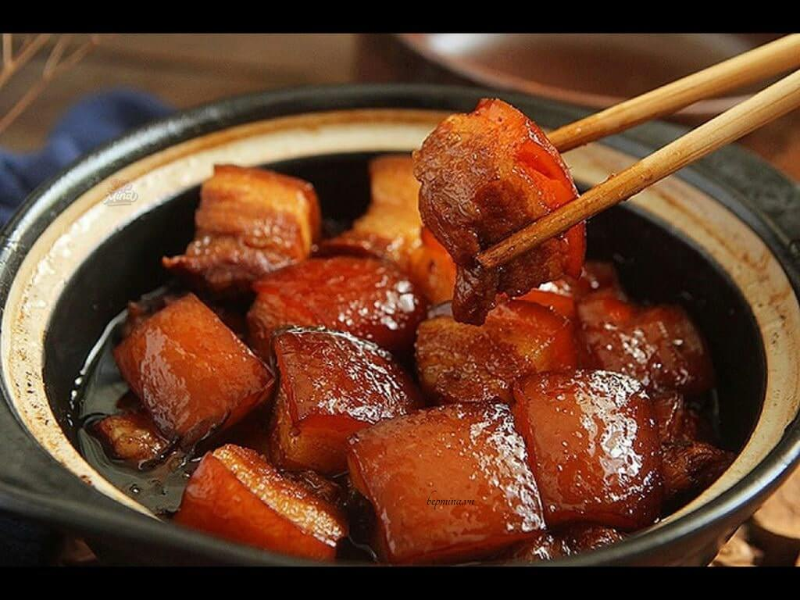
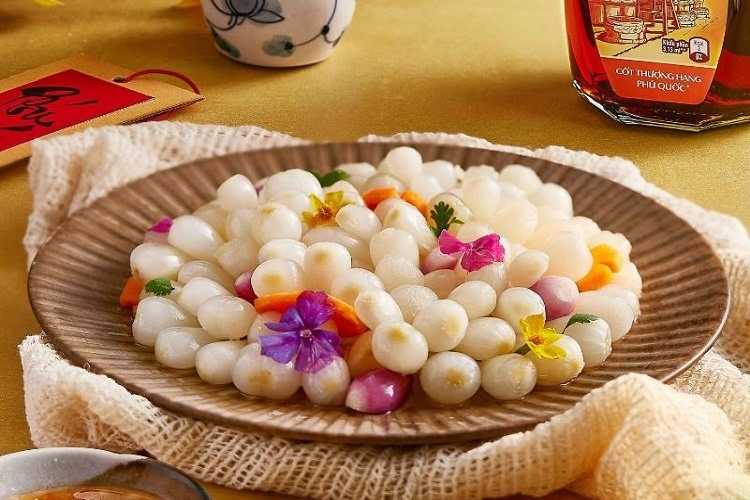
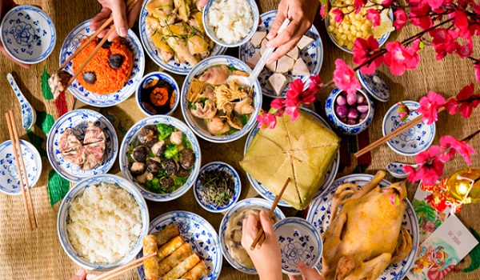

🍲 Các Món Ăn Truyền Thống Ngày Tết
Ẩm thực ngày Tết là một phần không thể thiếu trong văn hóa Việt Nam.
Mỗi món ăn đều mang ý nghĩa riêng, thể hiện mong ước về một năm mới đầy đủ,
thịnh vượng và may mắn. Dưới đây là những món ăn truyền thống phổ biến nhất.
1. Thịt Kho Tàu
Thịt kho tàu là món ăn đặc trưng của miền Nam, không thể thiếu trong mâm cơm ngày Tết.
Đặc Điểm:
- Thịt ba chỉ hoặc thịt đùi được kho với nước dừa, nước mắm
- Màu nâu đậm, vị ngọt đậm đà
- Thịt mềm, thấm vị, có thể để được nhiều ngày
Ý Nghĩa:
- Tượng trưng cho sự đầy đủ, no ấm
- Màu nâu đậm tượng trưng cho sự bền vững, ổn định
- Món ăn có thể để lâu, phù hợp với việc nghỉ ngơi ngày Tết
Cách Làm:
- Thịt cắt miếng vừa ăn, ướp với nước mắm, đường, tỏi
- Kho với nước dừa tươi, nước mắm, nước màu
- Kho nhỏ lửa cho đến khi thịt mềm, thấm vị
- Có thể thêm trứng vịt luộc vào kho cùng
2. Dưa Hành - Củ Kiệu
Dưa hành và củ kiệu là món ăn kèm không thể thiếu, giúp giải ngấy và tăng hương vị cho bữa ăn.
Dưa Hành:
- Hành tây hoặc hành củ ngâm chua ngọt
- Vị chua ngọt, giòn, thơm
- Màu trắng trong, đẹp mắt
Củ Kiệu:
- Củ kiệu ngâm với đường, giấm, ớt
- Vị chua ngọt cay, giòn
- Màu trắng hồng, đẹp mắt
Ý Nghĩa:
- Giải ngấy sau khi ăn nhiều thịt mỡ
- Tượng trưng cho sự thanh khiết, trong sáng
- Màu trắng tượng trưng cho sự tinh khiết, may mắn
3. Canh Măng
Canh măng là món canh truyền thống, thường được nấu với thịt gà hoặc thịt heo.
Đặc Điểm:
- Măng khô hoặc măng tươi nấu với thịt
- Vị ngọt thanh, thơm mùi măng
- Nước canh trong, ngọt tự nhiên
Ý Nghĩa:
- Tượng trưng cho sự sum họp, ấm cúng
- Món canh làm ấm bụng trong tiết trời lạnh
- Thể hiện sự đầy đủ, no ấm
4. Giò Chả
Giò chả là món ăn phổ biến trong mâm cỗ Tết, có nhiều loại khác nhau.
Các Loại Giò Chả:
🍖 Giò Lụa (Giò Bì):
- Thịt nạc heo giã nhuyễn, gói trong lá chuối
- Màu hồng nhạt, mềm, thơm
- Ăn kèm với bánh chưng, dưa hành
🍖 Giò Thủ:
- Làm từ đầu heo, có cả thịt và da
- Giòn, dai, thơm
- Món ăn đặc biệt, cầu kỳ
🍖 Chả Quế:
- Thịt nạc heo nướng với quế
- Màu nâu đậm, thơm mùi quế
- Vị đậm đà, hơi ngọt
Ý Nghĩa:
- Tượng trưng cho sự đầy đủ, phong phú
- Món ăn sang trọng, thể hiện sự chu đáo
- Dễ bảo quản, có thể ăn trong nhiều ngày
5. Gà Luộc
Gà luộc nguyên con là món không thể thiếu trong mâm cỗ cúng và mâm cơm ngày Tết.
Đặc Điểm:
- Gà luộc nguyên con, vàng đẹp
- Thịt mềm, ngọt tự nhiên
- Thường ăn kèm với muối tiêu chanh
Ý Nghĩa:
- Tượng trưng cho sự đầy đủ, trọn vẹn
- Màu vàng tượng trưng cho tài lộc, may mắn
- Món ăn trang trọng, phù hợp với dịp lễ
6. Xôi Gấc
Xôi gấc với màu đỏ rực rỡ là món ăn mang lại may mắn trong ngày Tết.
Đặc Điểm:
- Xôi nếp nấu với gấc
- Màu đỏ rực rỡ, đẹp mắt
- Vị ngọt nhẹ, thơm mùi gấc
Ý Nghĩa:
- Màu đỏ tượng trưng cho may mắn, thịnh vượng
- Món ăn cầu kỳ, thể hiện sự chu đáo
- Thường dùng để cúng tổ tiên
7. Nem Rán (Chả Giò)
Nem rán là món ăn phổ biến, được nhiều gia đình yêu thích trong dịp Tết.
Đặc Điểm:
- Nhân thịt, tôm, rau củ bọc trong bánh tráng
- Chiên vàng giòn
- Ăn kèm với rau sống, bún, nước mắm chua ngọt
Ý Nghĩa:
- Tượng trưng cho sự sum họp, quây quần
- Món ăn vui, cả gia đình cùng làm
- Màu vàng tượng trưng cho tài lộc
8. Bánh Kẹo, Mứt Tết
Các loại bánh kẹo, mứt là phần không thể thiếu, dùng để tiếp khách và cúng tổ tiên.
Các Loại Phổ Biến:
- Mứt dừa: Màu trắng, vị ngọt thanh
- Mứt gừng: Vị cay nồng, ấm bụng
- Mứt cà chua: Màu đỏ, vị chua ngọt
- Kẹo lạc (kẹo đậu phộng): Giòn, thơm
- Bánh kẹo các loại: Nhiều loại đa dạng
Ý Nghĩa:
- Thể hiện sự đầy đủ, phong phú
- Dùng để tiếp khách, thể hiện sự hiếu khách
- Mang lại niềm vui, đặc biệt cho trẻ em
Ý Nghĩa Tổng Thể Của Ẩm Thực Tết
Các món ăn ngày Tết không chỉ để no bụng mà còn mang nhiều ý nghĩa:
- Sum họp: Cả gia đình quây quần bên mâm cơm
- Đầy đủ: Thể hiện mong ước một năm mới no ấm
- May mắn: Mỗi món ăn đều mang ý nghĩa tốt đẹp
- Truyền thống: Gìn giữ hương vị quê hương
- Biết ơn: Dâng lên tổ tiên những món ăn ngon nhất

🍖 Thịt Kho
Thịt kho tàu truyền thống

🥒 Dưa Hành
Dưa hành, củ kiệu

🍽️ Mâm Cỗ
Mâm cỗ Tết đầy đủ
Lưu Ý Khi Chuẩn Bị Món Ăn Tết
- Chuẩn bị trước để tránh vội vàng
- Chọn nguyên liệu tươi ngon, chất lượng
- Nấu với tình yêu và sự cẩn thận
- Bảo quản đúng cách để món ăn giữ được lâu
- Chia sẻ với người thân, hàng xóm